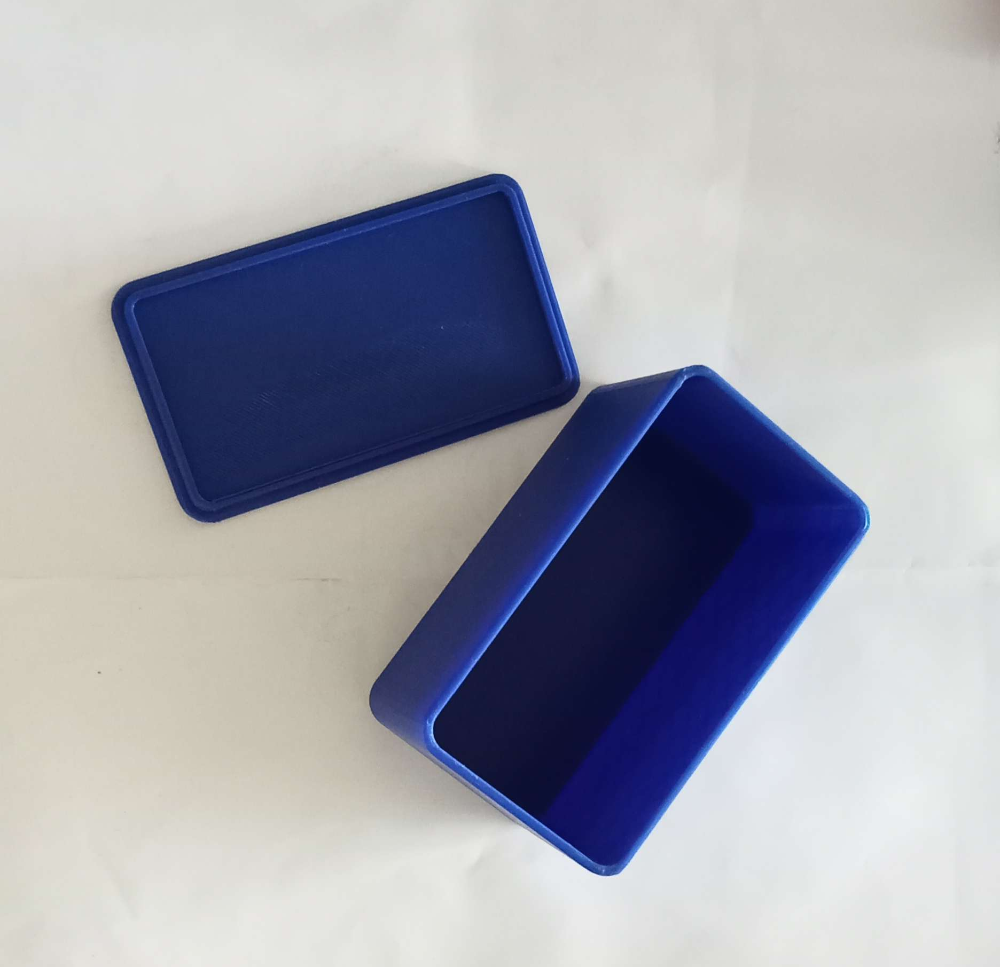
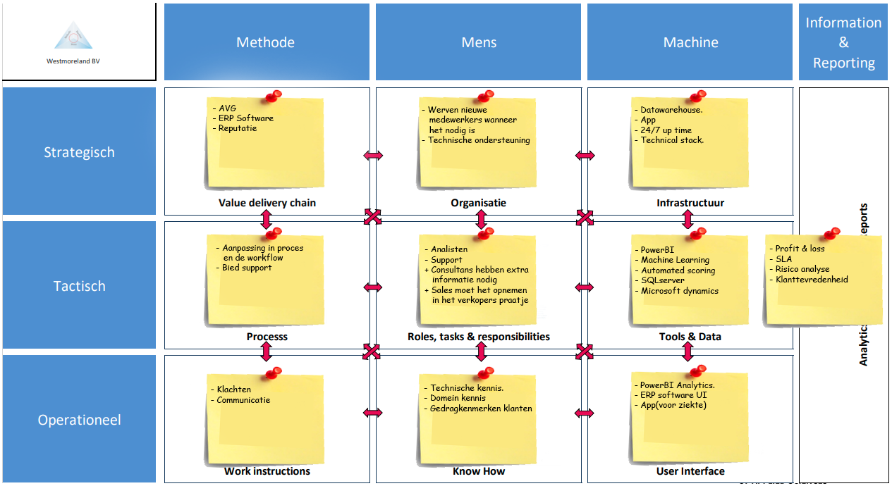

Je kiest ambitieuze leerdoelen en verkent disciplines buiten je eigen vakgebied
Het leren van 3D-modelleren met Solidworks, het slicen van dit 3D-model met Ultimaker Cura en vervolgens het uitprinten met een 3D-printer. Het resultaat van dit proces is hieronder te zien.
Het Business Model Canvas (BMC), dat we hebben geleerd tijdens een workshop op school, hebben we vervolgens geprobeerd toe te passen op Mprise. Deze ervaring heeft ons een dieper inzicht gegeven in de bedrijfsvoering van Mprise en heeft ons geholpen om de impact van onze innovatie beter te begrijpen. Het resultaat is hier onder te zien.

Het TOM-model, dat we hebben geleerd tijdens een workshop op school, hebben we vervolgens geprobeerd toe te passen op Mprise. Deze ervaring heeft ons een dieper inzicht gegeven in de organisatiestructuren en bedrijfsprocessen van Mprise, waardoor we beter kunnen beoordelen welke impact onze innovatie heeft op de bedrijfsvoering. Het resultaat is hier onder te zien.
Tijdens de kookworkshop heb ik geleerd hoe cruciaal communicatie is binnen een grote groep. We moesten een driegangenmenu bereiden, verdeeld over drie verschillende groepen, met gemiddeld acht mensen per groep. Helaas liep het voorgerecht uit en was er slechte communicatie met de andere groepen, wat resulteerde in vertraging waarbij andere groepen op hun eten moesten wachten. Bovendien werd niet iedereen adequaat betrokken, waardoor er geen rekening werd gehouden met ieders voorkeuren en smaken. Dit probleem had kunnen worden opgelost door betere onderlinge communicatie.
Tijdens het rollenspel van Yvonne Peterman heb ik meer geleerd over de verschillende rollen binnen een bedrijf. Voorheen dacht ik dat de HR-afdeling alleen verantwoordelijk was voor het aannemen van personeel, maar ik ontdekte dat zij veel meer taken hebben. Naast het werven van personeel houdt de HR-afdeling zich bijvoorbeeld bezig met het opstellen van arbeidscontracten, het begeleiden van medewerkers bij loopbaanontwikkeling, het verzorgen van trainingen en het handhaven van het beleid binnen het bedrijf.